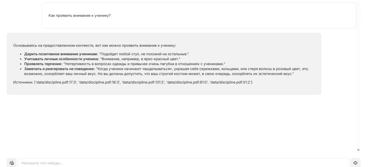
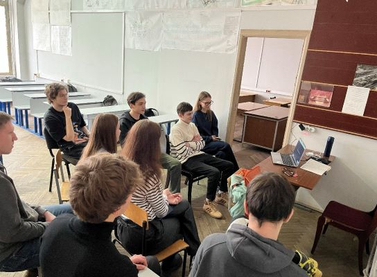

Запуск цифровой платформы "Ментор МГПУ"
15 апреля 2025 г.

Интерфейс новой цифровой платформы
Мы рады сообщить о запуске бета-версии цифровой платформы "Ментор МГПУ", которая значительно упростит процесс взаимодействия между наставниками и их подопечными.
Платформа предоставляет следующие возможности:
- Личные кабинеты для наставников и подопечных
- Система подбора пар "наставник-подопечный" на основе интересов и целей
- Календарь встреч и мероприятий
- Библиотека обучающих материалов
- Инструменты для отслеживания прогресса
- Чат для коммуникации между участниками
Обсуждение проекта с заказчиком
март 2025 г.

В течение первого семестра ключевым этапом работы стала серия встреч с заказчиком проекта. На этих встречах мы подробно обсудили цели и задачи проекта, а также определили основные направления его развития. Особое внимание было уделено формированию требований к цифровой платформе, которую планируется использовать для координации работы наставников и подопечных.
В процессе обсуждения заказчик обозначил свои ожидания по функционалу платформы, структуре пользовательских ролей и необходимым инструментам для эффективного взаимодействия участников. Мы совместно рассмотрели возможные сценарии использования платформы, а также определили приоритетные задачи на ближайший период.
По итогам встреч был составлен подробный план работ, включающий этапы проектирования, разработки и тестирования платформы. Заказчик предоставил ценные замечания и предложения, которые были учтены при корректировке технического задания. Такой формат взаимодействия позволил не только уточнить требования, но и выстроить прозрачную коммуникацию между командой и заказчиком, что, безусловно, повысит качество итогового продукта.
Прохождение курса по интеграции искусственного интеллекта
апрель 2025 г.

Образовательный процесс и командная работа
В ноябре наша команда разработчиков приняла участие в интенсивном курсе, посвящённом интеграции искусственного интеллекта в современные цифровые решения. В рамках обучения мы познакомились с передовыми технологиями, инструментами и подходами, которые позволяют создавать интеллектуальные системы и автоматизировать сложные процессы.
Особое внимание было уделено практическим аспектам внедрения ИИ в проекты, анализу успешных кейсов и работе с реальными задачами. Благодаря этому опыту мы не только расширили свои профессиональные горизонты, но и получили вдохновение для дальнейшего развития нашего проекта. Полученные знания и навыки уже находят применение в нашей работе, помогая создавать более эффективные и инновационные решения для пользователей.
Старт проекта "Ментор МГПУ"
февраль 2025 г.
В феврале 2025 года команда приступила к определению ключевых направлений разработки сайта для проекта "Ментор МГПУ". На старте мы провели серию стратегических сессий, в ходе которых сформулировали основные задачи цифровой платформы, определили целевую аудиторию и сценарии использования.
Особое внимание было уделено выбору технологического стека, который позволит реализовать современные решения для поддержки наставничества. Мы рассмотрели различные варианты интеграции искусственного интеллекта, чтобы создать интеллектуального ИИ-наставника, способного помогать пользователям в обучении и профессиональном развитии.
В результате обсуждений был выбран стек, включающий современные веб-технологии, инструменты для работы с большими данными и модули машинного обучения. Такой подход обеспечит гибкость, масштабируемость и возможность дальнейшего развития платформы. Командная работа на этом этапе заложила прочную основу для успешной реализации проекта и внедрения инновационных функций.